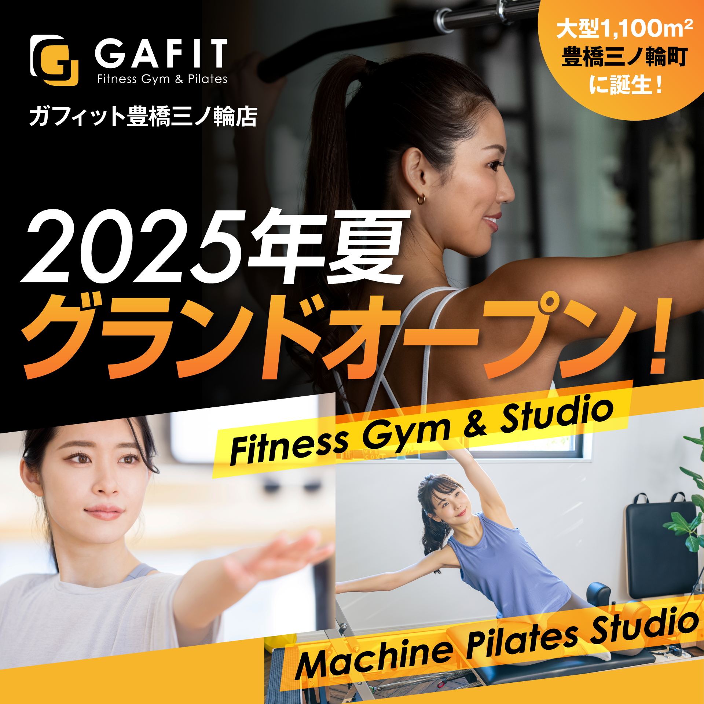

- ●給与
-
月給22.76万円～40万円
※経験や能力、実績などを考慮した上で月給を決定します。
※上記額にはみなし残業代（10時間分）を含みます。超過分は全額支給します。
※試用期間2ヵ月（月給21.64万円～）
- ●各種手当
-
・通勤手当 ※規定有（上限1万円まで）
・資格ライセンス手当 各資格に対し2,000～15,000円加算支給
・リフレッシュ休暇手当 一律30000円を支給／5日間の連続休暇を取得
・役職手当
- ●昇格年2回
-
※新規事業のため、リーダー・店長へのステップアップが可能です！
＜モデル年収（想定）＞
一般職（未経験） 305万円／月給22.7万円／1年目
一般職（経験者） 335万円／月給25万円／1年目
リーダー 410万円／月給30万円／2年目
店長 550万円／月給37万円／3年目
- ●賞与年2回（6月・12月）
-
※会社及び個人の業績により支給します
- ●休日休暇
-
・シフト制（実労働8時間 9:00－23:00）
・週休2日制（月8～9日、年間休日116日以上）※会社のカレンダーによる
└リフレッシュ休暇（5日間の連続休暇）
└夏季休暇（3日間の連続休暇）
└年末年始休暇（4日間の連続休暇）
・慶弔休暇、産前産後休暇、育児休暇
- ●福利厚生
-
・各種社会保険完備（雇用・労災・健康・厚生年金）
・定期健康診断、予防接種
・資格取得支援制度、社外資格取得補助
・フィットネスジム（スポーツクラブ施設）利用料無料（社員）、利用料特別割引（家族）
・屋内禁煙
・車、バイク通勤OK
・ユニフォーム、制服貸与
・研修制度あり、外部セミナー参加
- ●勤務地（配属）
-
愛知県豊橋市三ノ輪町本興寺10－4
- ●仕事内容
-
ガフィットの運営業務をお願いします｡お客様が気持ちよくトレーニングできる環境をつくることと、マシンピラティスのレッスンを担っていただくことがメインのお仕事です。異動後、グランドオープン前の約1～2ヵ月間は、一緒にスタートを切るスタッフとともにトレーニング知識を学ぶ研修プログラムをご用意しております。
【マシンピラティスのレッスンについて】
スタジオの前面にポーズの見本・解説の映像を流します。会員様は映像を見ながらエクササイズを行うため、インストラクターはお客様のサポートやアドバイスに集中しやすい環境です。
《お客様対応》
★マシンピラティスレッスン／1日2～3回：1レッスン50分
★ジムエリアの巡回・対応／お客様に機器の使い方をご説明、マシン・ルーム内の清掃
★カウンセリング／お客様に合わせたプログラムのご案内
★フロント業務／接客対応・フィットネス関連商品の販売 など
《スタジオ運営》
★管理業務／インストラクターへの依頼・プログラム管理
★事務業務／スケジュール管理・商品管理
《営業促進》
★SNS運用／ブランディング
★キャンペーン／新規・既存お客様のための新企画立案 など
《人事関連》
★能力向上／アルバイトスタッフさんと向き合う時間をつくる、マニュアル作成 など
その他、バックヤード業務として個人情報の管理や在庫管理などの業務があります。
- ●就業時間
-
9:00~23:00（シフト制・実働8時間・休憩60分）
---- 早番スケジュール（イメージ） ----
▼09:00 出勤・清掃活動
▼09:30 ジムエリア巡回
▼10:30 1本目のマシンピラティスレッスン
▼12:00 フロント業務
▼13:00 休憩
▼14:00 2本目のマシンピラティスレッスン
▼15:00 SNS運用
▼16:00 ジムエリア巡回
▼17:30 岩盤浴清掃
▼18:00 退勤
- ●選考スケジュール
-
▼【STEP1】書類選考（履歴書・職務経歴書）
履歴書（写真貼付）、職務経歴書をご提出ください。
提出の方法は (1)郵送 (2)データ提出 のどちらかをお選びください。
(1)郵送先：〒441-8032 愛知県豊橋市花中町56
株式会社立岩 人事部 採用担当宛
（お問い合わせは下記まで）
TEL:0532-34-3670（株式会社立岩 人事部）
(2)データでのご提出は、下記のメールアドレスまでお送りください。
saiyou@gachapon.com
人事部 採用担当宛
▼【STEP2】最終選考（面接）
▼【STEP3】内定
◆ご応募から内定までは1～3週間を予定しております
◆面接日はご相談に応じます
◆応募の秘密厳守します
※応募書類はご返却できませんので、予めご了承ください
※ご入社の時期は6月中旬を予定しております
- ■最終面接会場
-
愛知県豊橋市花中町56
- ■お問い合わせ先
-
株式会社立岩 採用担当
TEL：0532-34-3670(受付／平日9時～17時30分)
MAIL：saiyou@gachapon.com